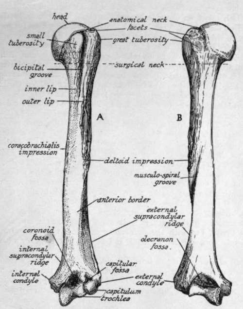

Humerus
Description
This section is from the book "The Anatomy Of The Human Skeleton", by J. Ernest Frazer. Also available from Amazon: The anatomy of the human skeleton.
Humerus
A long bone forming the skeleton of the upper arm, articulating with the scapula above and with the bones of the forearm below : it has an elongated shaft with expanded upper and lower ends (Fig. 61). The upper end has an articular head directed upwards, inwards and very slightly backwards, joined to the rest of the bone by a shghtly constricted anatomical neck. The remainder of the upper end presents in front a small tuberosity for insertion of Subscapularis, separated by a deep bicipital groove (for long tendon of Biceps) from the larger mass of the great tuberosity : this has upper, outer, front, and back aspects, being continuous with the bone on its inner aspect, and has three quadrilateral facets on its upper and back aspects for the tendons of Supraspinatus, Infraspinatus, and Teres minor.
The upper end joins the shaft by the surgical neck, a common site of fracture spoken of by surgeons as "fracture of the neck" of the bone. The shaft: front surface has, at the upper part, the continuation of the bicipital groove, bounded by inner and outer lips, continuous with small and front part of great tuberosity respectively : inner lip has a rough marking for Teres major, and outer hp has insertion of Pectoralis major while the floor of the groove gives attachment to Latissimus dorsi at a somewhat higher level. The outer lip runs down into the front part of a rough deltoid impression which is on the outer side of shaft. Nearly opposite this on the inner side, but as a rule a httle lower, is the slight impression for Coraco-brachialis.
Upper half of shaft is more or less cylindrical, but the lower half widens to carry the lower end, so that the posterior surface is flattened in the lower part but rounded above : about half-way down, near the outer side behind, a slight twist in the bone gives the appearance of a badly-defined groove, the musculo-spiral groove, which passes spirally downwards towards a point a little distance below the deltoid impression : it has the musculo-spiral nerve and superior profunda artery in relation with it. The outer head of Triceps arises above and outside the groove, and the large inner head below and internal to it. The front surface of the lower half is not flattened, but presents a rounded, broad anterior border or ridge dividing it into antcro-internal and antcro-external surfaces: the ridge is continuous with the external hp of the groove above. This front surface of the lower part of the shaft gives origin to the Brachialis anticus which covers it, and is bounded at the sides by internal and external supracondylar ridges which lead down to the internal and external condyles.
The external supracondylar ridge has the outer intermuscular septum attached to it. and in front of this the Supinator longus (upper two-thirds) and Ext. carpi radialis longior (lower third) : the inner ridge is for the inner septum.
The lower end has the condyles on each side, a groove behind the inner condyle lodging the ulnar nerve : immediately outside this a hinge-like articular surface, the trochlea, for the ulna, and outside this the capitulum, a convex articular surface on the front and lower aspect to articulate with the head of the radius. Above the trochlea a deep olecranon fossa behind, and a shallower coronoid fossa in front, to receive the corresponding parts of the ulna : above the capitulum in front a very shallow capitular fossa.
Fig. 61.-Left humerus. A. anterior aspect; B. posterior aspect. To distinguish left from right, hold the bone with the rounded head above and with its articular surface looking inwards, while the bicipital groove is iu front.
The humerus is held to the glenoid cavity of the scapula during movement more by the surrounding muscles than by the tension of any hgaments. The ligamentous capsule as a whole is thin, attached to the glenoid hgament and glenoid rim on the scapula and to the anatomical neck of the humerus, extending to the surgical neck below : it is very loose below and in front and behind, but fairly tense above when the arm is by the side-for no further adduction is possible.
It has, however, one strong accessory band in the shape of the coraco-humeral ligament, which passes on one side beyond the glenoid margin on to the coracoid process, and on the other extends beyond the anatomical neck to the tops of both tuberosities, on either side of the commencement of the bicipital groove, so that its front part stands out as a fibrous edge between the Subscapular arid Supraspinatus tendons, while it becomes continuous behind, under the latter tendon, with the plane of the capsule (see Figs. 57 and 62). The long head of Biceps passes over the head of the bone, in the articular cavity and surrounded by synovial membrane, to reach the groove, and is regarded as an additional factor helping to keep the head in the cavity : as it emerges from under the coraco-humeral ligament this is strengthened over the top of the groove by transverse fibres. The coraco-humeral band would tend to check extreme outward rotation. Three accessory gleno-humeral ligaments, of no apparent mechanical importance, are present inside the joint, rnaking prominent folds of the synovial membrane on its front wall. They are directed down and out from the upper and front glenoid rim, and the upper band is attached at the fovea humeri, an impression on the anatomical neck just above the small tuberosity. The opening for the subscapular bursa is between the upper and middle bands, and here, therefore, the subscapular tendon comes into relation with the articular surface. The head of the humerus is almost a third of a sphere, set at an angle of 140 degrees with the axis of the shaft, and covered by hyaline cartilage that is thicker in the centre, thus contrasting with the opposing cartilage that lines the glenoid cavity. The area of its articular surface is more than twice that of the glenoid surface, so that a large part must always he in contact, not with the glenoid cavity, but with the surrounding capsule : when the arm is by the side this capsular contact is mainly above and behind, but is below when the arm is raised.
Continue to: